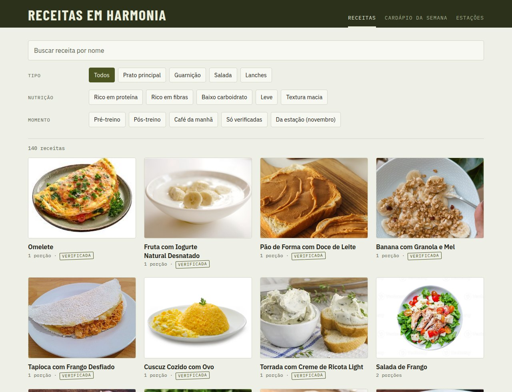
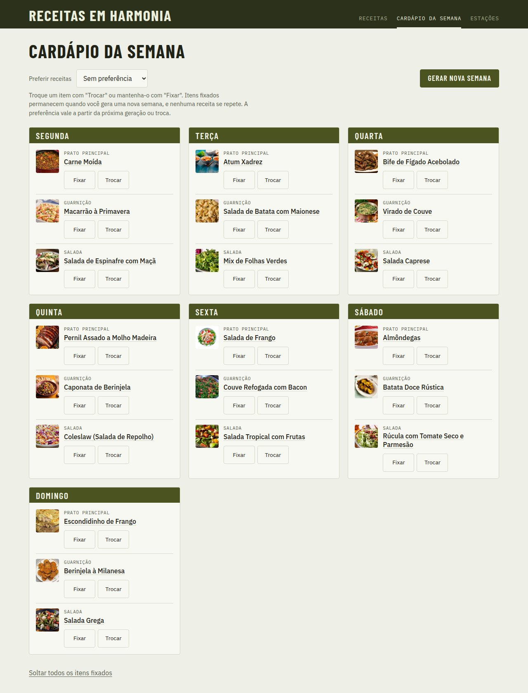
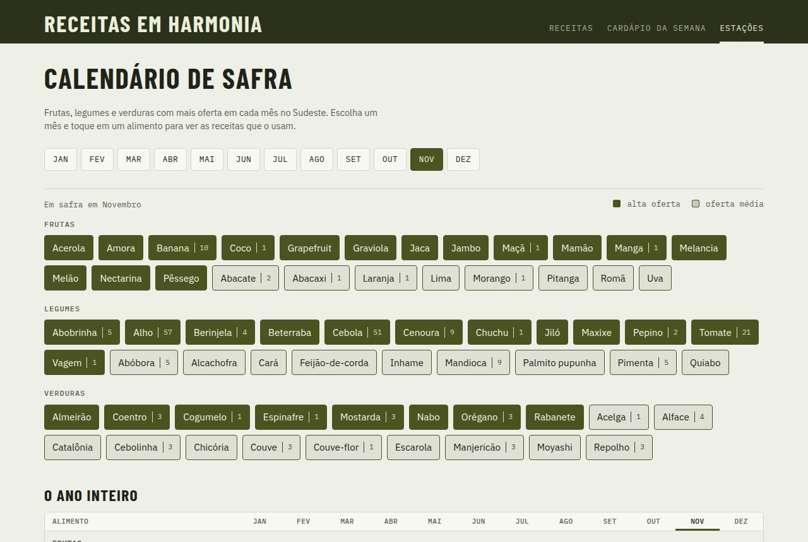
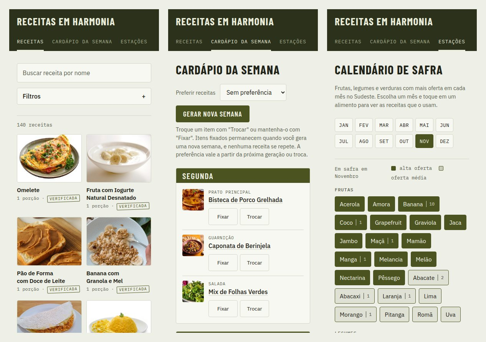

Contexto
Um caderno de receitas para uso pessoal que também resolve o planejamento das refeições da semana. Ele reúne 140 receitas e monta um cardápio de 7 dias com prato principal, guarnição e salada, sem repetir pratos. Também mostra o que está em safra em cada mês, para priorizar ingredientes da estação.
Não há backend nem banco de dados: as receitas ficam em receitas.json, a safra em sazonalidade.json, e todo o processamento acontece no navegador.
Funcionalidades
- Receitas: busca por nome que ignora acentos e filtros combináveis por tipo de prato, perfil nutricional (proteína, fibras, baixo carboidrato), momento do dia (pré e pós-treino, café da manhã), receitas já testadas e ingredientes da estação
- Cardápio da semana: sorteio dos 7 dias sem repetição, com opções para trocar um item, fixar outro ao gerar uma nova semana e dar preferência a uma tag ou à safra do mês
- Persistência local: o cardápio fica salvo no
localStoragee continua o mesmo ao recarregar a página - Calendário de safra: frutas, legumes e verduras com alta e média oferta em cada mês, quantas receitas usam cada alimento e uma matriz do ano com o mês atual em destaque
- Celular: layout responsivo, com filtros recolhidos e botões de tamanho adequado para toque
Capturas de tela




Dados de safra
O sazonalidade.json classifica cada mês de cada alimento como alta, média ou baixa oferta. A base mensal vem do mapa de sazonalidade da CEAGESP (2019 a 2023), que compara cada mês com a média de 60 meses de entradas no entreposto de São Paulo. A classificação por estação foi conferida com as listas do IDEC e da Organis.
A ligação entre receitas e safra é feita pelo nome do ingrediente. Alho, cebola e temperos verdes ficam fora do filtro "da estação", porque aparecem em quase todas as receitas.
Decisões técnicas
- HTML, CSS e JavaScript puros, sem etapa de build, publicados direto no GitHub Pages
- Dados em JSON versionados no repositório: adicionar uma receita é acrescentar um objeto ao arquivo
- Código compartilhado entre as três páginas em um único
app.js(carregamento dos dados, janela da receita, escape de HTML e lógica de safra) - Bootstrap 5 usado apenas para a janela da receita e utilitários de layout